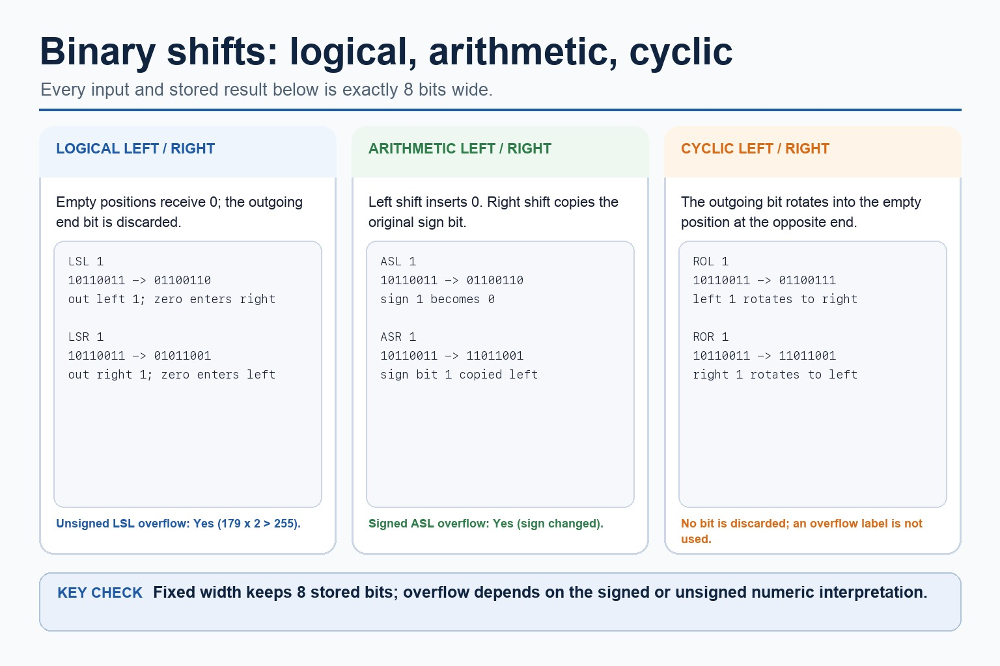

Cambridge AS9618 | Paper 1 | Section 4: Processor fundamentals
Bit manipulation, masks and binary shifts
Flexible-depth lesson
Bit manipulation, masks and binary shifts
S4.15 | Select what to omit, teach briefly or explore in depth.
Quickdiagnose + essentials
Fullcomplete explanation
Deepprerequisites + extension
Choosepractice by need
Teacher choice
Choose the depth for this group
Quick route
Use the diagnostic, learning objectives, first worked example and foundation question. Stop once the learner can explain the central distinction accurately.
Full route
Teach every core explanation point, the worked example and all lesson questions. Use the visual only when it adds a different representation.
Deep route
Add the prerequisite refresher, ask learners to connect the concept checklist, discuss the labelled extension and complete a transfer question without a model answer.
Part 1 | optional depth
Prerequisite knowledge and quick diagnostic
Recall S1.02 before starting this lesson.
Give one accurate definition or method step before continuing. If it is missing, revisit only that prerequisite.
Open optional prerequisite refresher
The Version 2 row requires binary, denary, hexadecimal, Binary Coded Decimal (BCD), one's complement and two's complement; BCD and complements are representations rather than additional number bases.
Show understanding of binary, denary and hexadecimal number systems, BCD, and one's- and two's-complement representations.
Part 2 | deliberately over-complete
Knowledge explanation
Learning objectives
Use AND, OR, XOR, LSL and LSR for bit manipulation, including testing/setting bits with masks.
Open the concept checklist and choose what to teach
AND mask / bitwise AND
OR mask / bitwise OR
XOR mask / bitwise XOR
LSL / logical left shift
LSR / logical right shift
logical
arithmetic
cyclic
left shift
right shift
test
set
clear
toggle
monitor
control
Detailed explanation
Teach all points, or select only the ones this group needs. The list is intentionally fuller than a fixed lesson slot.
Use AND, OR and XOR masks to test, set, clear and toggle bits, and apply logical, arithmetic and cyclic left/right shifts at a stated fixed width. Include device monitoring/control and distinguish discarded, sign-filled and rotated bits.
A bitwise AND mask can test or clear selected bits; an OR mask can set selected bits; an XOR mask can toggle selected bits. These operations are used to monitor and control individual flags without changing unrelated bits.
LSL is a logical left shift and LSR is a logical right shift. Distinguish logical shifts from arithmetic shifts and cyclic shifts: a logical shift inserts zero, an arithmetic right shift preserves the sign bit, and a cyclic shift wraps the bit that leaves one end back to the other.
For bit manipulation, masks and binary shifts, identify the required concept before describing its mechanism or consequence.
Worked example
Test, set, clear and toggle one flag: For Status = 10110100, an AND mask tests a selected bit, an OR mask sets it, an AND mask with a zero at that position clears it, and an XOR mask toggles it. LSL moves bits left; LSR moves them right and fills with zero.

Binary shifts: logical, arithmetic, cyclic. One maintained explanation is shown as an image on larger screens and as text on small screens.
Every shown input and stored result contains exactly eight bits.
Logical shifts insert zero; logical left 10110011 becomes 01100110 and logical right becomes 01011001.
Arithmetic left 10110011 becomes 01100110; arithmetic right copies sign bit 1 and becomes 11011001.
Cyclic left rotates the outgoing bit to give 01100111; cyclic right gives 11011001.
Unsigned logical-left overflow and signed arithmetic-left overflow both occur here; rotations do not use an overflow label.
Part 3 | select by learner need
Practice by question type
explainexplainfoundation6 marks
Question 1. Explain how AND, OR and XOR masks test, clear, set and toggle control flags, then apply one LSL and one LSR.
Show answer and marking guidance
Answer: AND test/clear; OR set; XOR toggle; correct LSL; correct LSR; monitor/control context
Marking guidance: Do not treat logical, arithmetic and cyclic shifts as identical.
Common error: For the command word explain, perform that exact action; do not replace it with an unrelated fact.
applyrecallapplication2 marks
Question 2. Which mask operation sets selected bits?
Show answer and marking guidance
Answer: Bitwise OR.
Marking guidance: Award one mark for each distinct, technically accurate point or method step.
Common error: Do not repeat the same point in different words; each mark needs a separate idea or method step.
applyrecalltransfer2 marks
Question 3. What is inserted by a logical shift?
Show answer and marking guidance
Answer: Zero bits.
Marking guidance: Award one mark for each distinct, technically accurate point or method step.
Common error: Do not copy the worked example unchanged; transfer the method and check it against the new context.
Related past-paper indexes
Reference
Marks
Command word
Question type
9618/13/W/25 Q6(a)
4
compare
evaluate
9618/11/W/25 Q4(a)
1
apply
recall
9618/11/W/25 Q4(b)
1
apply
recall
9618/11/W/25 Q4(c)
1
apply
recall
Index only: Cambridge question and mark-scheme wording is not reproduced on this public course page.
Part 4 | close when ready
Summary and exam reminders
Summary
Define bit manipulation, masks and binary shifts with the exact technical vocabulary expected by the syllabus.
Use the lesson method on a fresh context and show the intermediate decision, representation or calculation.
Match the shape of the answer to the command word and the available marks.
Check the final answer against the scenario instead of repeating a memorised sentence.
Common error to correct
Students often memorise register names without roles. Correction: a register earns its name by what it temporarily holds.
Exam technique
Follow the command word: state gives a fact; explain links a cause to a consequence; compare covers both sides.
Match the number of independent points or method steps to the available marks.
For bit manipulation, masks and binary shifts, use the exact technical term before applying it to the scenario.